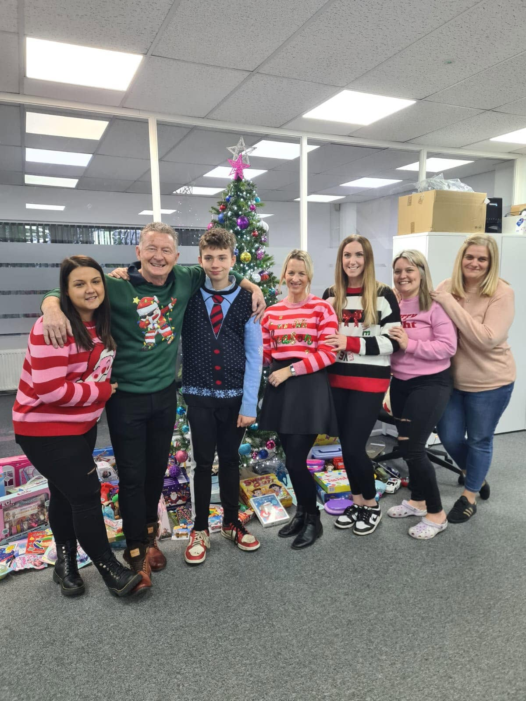
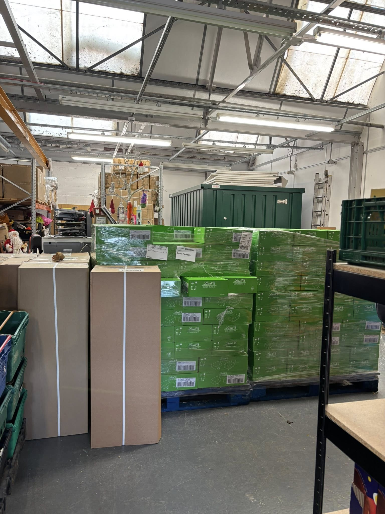
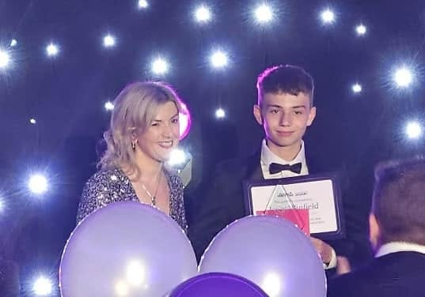

Our Story
Isaac started this food bank aged 9, with his own pocket money, because he believed no one in Redditch should go hungry. He still does.
How it started
In November 2020, with the country in the grip of the COVID pandemic and Christmas approaching, a boy called Isaac Winfield set up a pop-up greenhouse on his family's driveway in Redditch.
No funding. No committee. No plan beyond a simple belief: people around him were struggling, and he could do something about it. So he used his own pocket money to stock it and opened it up to whoever needed it.
Isaac has a rare chromosomal disorder and is severely dyslexic with learning difficulties. None of that stopped him. What started as a single shed on a driveway grew — because Isaac kept growing it.


The Journey
Isaac, aged 9, sets up a pop-up greenhouse on his family driveway using his own pocket money. The first Friends of Isaac's Food Bank opens during the COVID pandemic.
BBC Hereford & Worcester film the opening of the Moons Moat site and award Isaac a Make A Difference Young Hero Award. The story reaches a national audience.
A thief in a panda mask burgles the food bank. Police arrest a man. Aldi step in and restock the shed entirely — a moment that captures what community solidarity looks like.
Isaac opens a present bank at The Greenlands pub, collecting Christmas gifts for families who would otherwise go without. It becomes an annual fixture.
The CIC van breaks down. Community heroes rally together to get it back on the road — a moment that shows just how much people believe in what Isaac has built.
Aldi donate 500 Easter eggs worth £1,500 for distribution across the network — the latest in a string of major corporate partnerships that keep the shelves stocked.
Isaac wins the Business Success Network Rising Star of the Year award, sponsored by Katie Murray. Recognition from the business community for what he has achieved.
On his 13th birthday, Isaac asks friends and family not to bring gifts but to bring donations for the food bank instead. He fills a van.
Since the conflict began, Isaac has been sending solar-powered chargers to Ukraine for use on the front line. His concern for people in need has never been local only.
Where we are now
Friends of Isaac's Food Bank CIC is now a registered Community Interest Company. Isaac, now 13, runs it alongside his mum Claire Chapman and a team of 10–15 volunteers.
Five sheds are open across Redditch, seven days a week, 365 days a year. A sixth and seventh are in planning. The operation distributes between 5,000 and 6,000 food parcels every year — all without a single referral, voucher, or question asked.
The work has been covered by the Daily Mail, The Mirror, The Independent, Metro, and the BBC. But Isaac has never done it for the coverage. He does it because people in Redditch need it.


Recognition

Awarded by BBC Hereford & Worcester. Isaac was filmed at the Moons Moat opening in June 2023.

Sponsored by Katie Murray. Awarded 29 June 2024 in recognition of Isaac's remarkable achievement.
Whether you want to donate, volunteer, or simply share what Isaac has built — every bit of support keeps the sheds open.